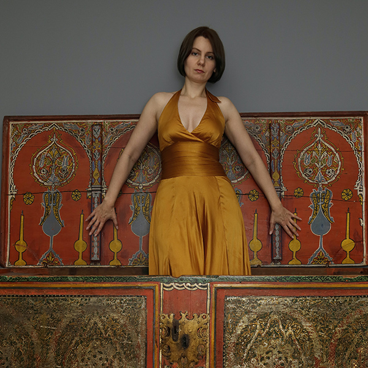

I started learning Chinese language on the third year of study and moved to Beijing for six month on fifth year,
bringing back good memories and deep respect for Chinese culture and love for Chinese tea.
'>
" data-text='
Cats or dogs?
I definately prefer cats!
This is my cat Dora. She is in Moscow with my mother.
'>
The iOS version is temporarily unavailable but it will be fixed shortly.
'>
I applied C# knowledge I've got by creating a game for iOS and Android,
and then switched to learning Python.
In the beginning of this year I left my non-IT job and found a Junior Software Developer position in Moscow.
Now I am ready for the next step in my career and hope Codaisseur will help me with it.
Please add me at
LinkedIn
'>
I am just a simple Russian girl and I dance with brown bears.
Sometimes I enjoy making strange self-portraits like this:)
'>
" data-text='
In 2019 I've decided to get married, change my career to become a Software Developer
and move from Moscow to the Netherlands.
It all wouldn't be possible without support from my significant other.
'>
You can see some of my photos (not the most recent ones) on
Flickr
'>
" data-text='
In any incomprehensible situation drink tea!
I like Chinese tea very much, including wulong tea, red tea, green tea, white tea, puer tea, yellow tea, black tea...
'>
" data-text='
Partly thanks to my Chinese language knowledge most of my previous work was related to China and
I visited it multiple times.
Over the years I studied, had business trips and spent my holidays in China and learned a great deal about it.
'>